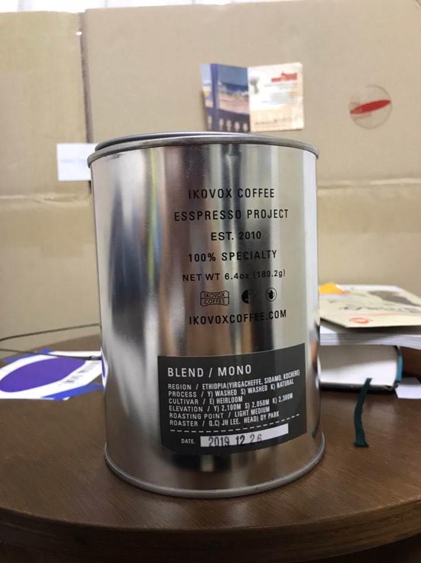
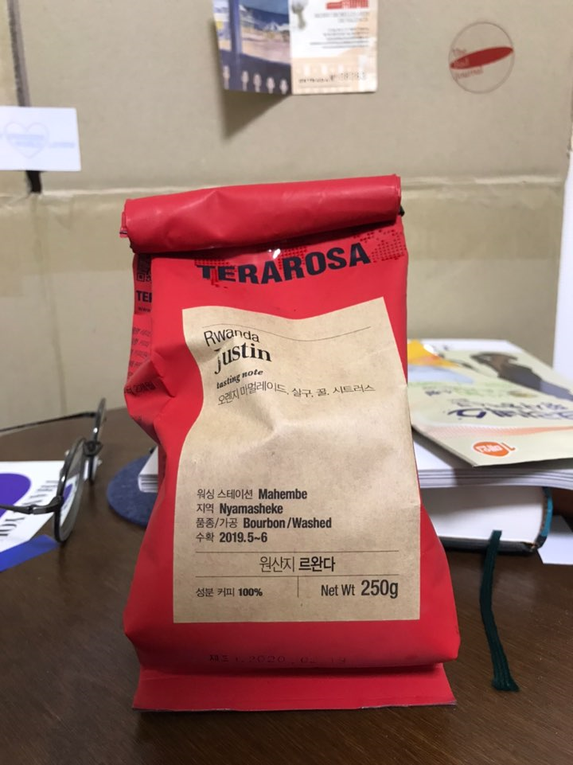

NOT A SAME SHAPE
I
dont
know
what
life
is

IKOVOX - MONO
Ethiopia
부드러운 향과 깔끔한 맛
커피가루가 매우 고움
예가체프, 시다모, 코체레

TERAROSA - Justin
탄향이 강하지만 맛은 완전 깔끔
차갑게 먹을때 신맛이 더 잘 올라옴
커피가루에 뭔지모를 향나는게 섞여있음
재료: 오렌지마멀레이드,살구,꿀,시트러스